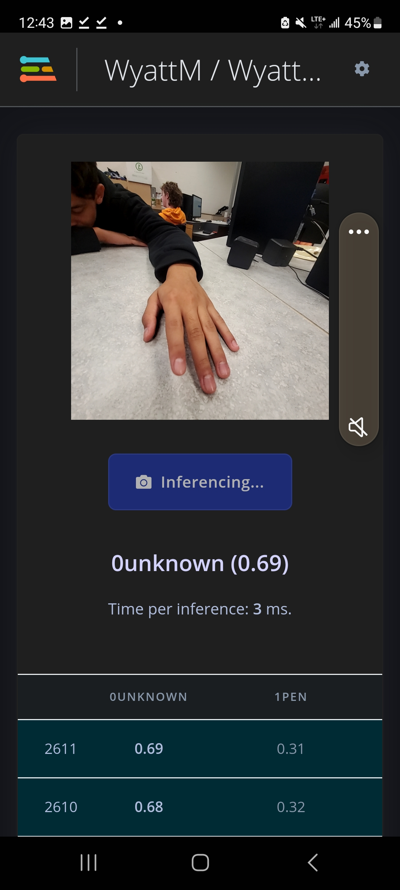
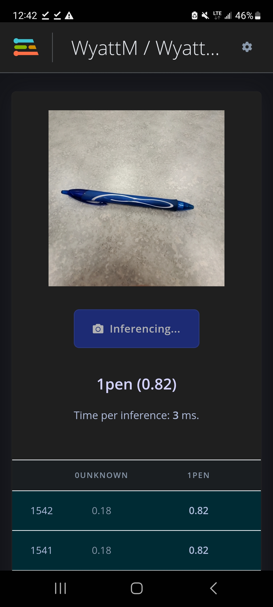

t1a14-ai-edgeimpulse-wyatt.html
Tried making a classification moden on
Your job if assigned for other webpages is to make other models with your cell phone or a computer with a webcam.
Visual Classification - Done
Wake word (sound)
Motion (movement x, y, z)
Visual Object Detection FOMO (faster objects more objects)
Visual Regression
Visual Anoamoly Detection
Data Entry

Data Totals

Data Explorer

Confusion Matrix

Unknown Correct

Pen Correct
